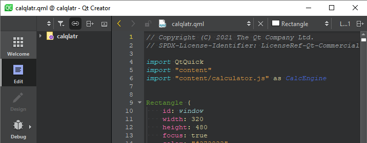

Show and hide the main menu
On Linux and Windows, you can hide the main menu bar to save space on the screen. Select View, and deselect the Show Menu Bar check box.

Qt Creator without the main menu bar.
To show the main menu again, press Ctrl+Alt+M.
See also Show and hide sidebars and Switch between modes.